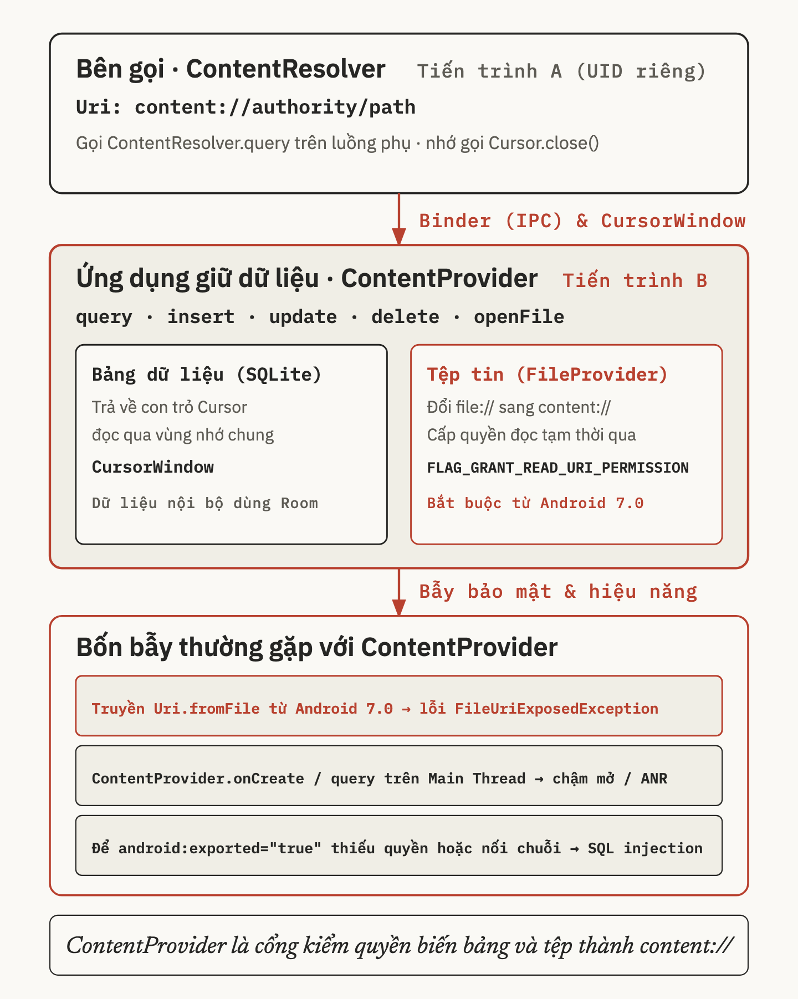

Content provider
Bản 30 giây
Khi ứng dụng nhắn tin muốn đọc danh bạ hay lấy ảnh từ ứng dụng khác, nó không thể mở thẳng tệp của người ta. ContentProvider là cổng gác dữ liệu chuẩn hóa giúp ứng dụng chia sẻ bảng dữ liệu hoặc tệp cho bên khác sau khi kiểm quyền. Nhờ có cổng này, bạn cấp được quyền đọc tạm thời cho từng bức ảnh lẻ mà không làm lộ cả thư mục riêng.
Cần biết trước
Vấn đề buộc nó ra đời
Từ bản Android 1.0 (2008), hệ điều hành chạy mỗi ứng dụng dưới một tài khoản người dùng Linux (UID) riêng biệt. Tệp cơ sở dữ liệu của ứng dụng nào thì khóa chặt trong thư mục riêng của ứng dụng đó, không ai ngoài đọc được.
Trước đây, nhiều lập trình viên lách luật bằng cách ném thẳng đường dẫn tệp file:// qua Intent. Một số khác lại mở toang quyền đọc tệp cho toàn bộ máy. Cách này vừa làm lộ cấu trúc thư mục riêng, vừa buộc bên nhận xin quyền đọc toàn bộ nhớ ngoài rất nguy hiểm.
Từ Android 7.0 (API 24), ứng dụng nhắm API này không được đưa đường dẫn file:// ra ngoài. Làm vậy sẽ gặp lỗi FileUriExposedException. Mọi việc chia sẻ dữ liệu hay tệp liên ứng dụng bắt buộc phải đi qua địa chỉ content:// của ContentProvider hoặc FileProvider.
Nó thực sự là cái gì
ContentProvider không phải là một hệ quản trị cơ sở dữ liệu như SQLite. Thực chất, nó là lớp vỏ giao tiếp liên tiến trình (IPC) bọc ngoài kho dữ liệu bất kỳ như bảng SQLite hay tệp ảnh. Bên gọi không bao giờ chạm trực tiếp vào ContentProvider, mà phải gửi địa chỉ Uri qua đối tượng trung gian ContentResolver.
Cơ chế

Khi bạn gọi ContentResolver.query với địa chỉ content://authority/path, hệ thống dùng tên định danh (authority) để tìm tiến trình chứa ContentProvider đó. Yêu cầu đi qua Binder sang đánh thức các hàm query, insert, update, delete hoặc openFile bên phía ứng dụng giữ dữ liệu. Với bảng dữ liệu, kết quả trả về là con trỏ Cursor đọc qua vùng nhớ chung (CursorWindow) để khỏi chép từng dòng qua Binder. Với tệp tin, FileProvider đổi đường dẫn tệp thật thành địa chỉ content:// và cho phép gắn cờ FLAG_GRANT_READ_URI_PERMISSION để cấp quyền đọc tạm thời.
Đánh đổi
Đi qua ContentProvider giúp hệ điều hành kiểm quyền truy cập tới từng dòng dữ liệu hoặc từng tệp mà không lộ đường dẫn gốc. Đổi lại, việc dựng tiến trình đích và truyền dữ liệu qua Binder chậm hơn nhiều so với đọc trực tiếp trong cùng ứng dụng. Ngoài ra, hàm ContentProvider.onCreate luôn chạy trên Main Thread trước cả Application.onCreate, nên khởi tạo nặng ở đây sẽ làm chậm lúc mở ứng dụng.
Nguyên lý gốc
Không bao giờ đưa chìa khóa cả kho dữ liệu cho bên ngoài. Chỉ cấp thẻ truy cập tạm thời qua một cổng kiểm soát tập trung.
Key insight
ContentProviderkhông lưu dữ liệu, mà là cổng kiểm quyền liên tiến trình biến đường dẫn tệp và bảng nội bộ thành địa chỉcontent://.
Khuôn mẫu chuẩn
val photoFile = File(context.cacheDir, "receipt.jpg")
val contentUri: Uri = FileProvider.getUriForFile(
context, "${context.packageName}.fileprovider", photoFile
)
val viewIntent = Intent(Intent.ACTION_VIEW).apply {
setDataAndType(contentUri, "image/jpeg")
addFlags(Intent.FLAG_GRANT_READ_URI_PERMISSION)
}
context.startActivity(viewIntent)
Bẫy & ranh giới
Truyền thẳng đường dẫn Uri.fromFile vào Intent khi ứng dụng nhắm Android 7.0 trở lên sẽ làm sập ngay với lỗi FileUriExposedException. Gọi ContentResolver.query trên Main Thread sẽ gây đơ và nổ lỗi ANR, còn quên gọi Cursor.close() sẽ làm rò rỉ bộ nhớ vùng CursorWindow. Tự viết ContentProvider mà để android:exported="true" thiếu quyền bảo vệ hoặc nối chuỗi truy vấn sẽ làm lộ dữ liệu qua lỗi SQL injection. Khi chỉ lưu dữ liệu dùng riêng trong một ứng dụng, đừng tạo ContentProvider cho cồng kềnh mà hãy dùng thẳng Room.
Câu hỏi thực chiến
Hỏi: Ứng dụng của mình chỉ lưu dữ liệu nội bộ chứ không chia sẻ cho app khác thì có cần viết ContentProvider không?
Không. Nếu dữ liệu chỉ dùng nội bộ, việc bọc thêm ContentProvider chỉ làm code dài dòng và tốn thêm chi phí trung gian. Bạn chỉ cần dùng thẳng cơ sở dữ liệu Room hoặc DataStore là đủ.
Hỏi: Vì sao một số thư viện như Firebase hay WorkManager tự động khởi tạo được mà không cần mình gọi hàm init trong Application?
Vì các thư viện đó khai báo sẵn một ContentProvider rỗng trong tệp manifest của thư viện. Khi ứng dụng vừa mở, Android tự động tạo các ContentProvider và gọi hàm onCreate của chúng trên Main Thread trước cả khi chạy Application.onCreate.
Hỏi: Đọc danh bạ bằng ContentResolver xong mà không đóng Cursor thì bị lỗi gì?
Mỗi đối tượng Cursor trả về từ ContentProvider đều giữ một vùng nhớ dùng chung CursorWindow kèm tài nguyên kết nối liên tiến trình. Nếu bạn không gọi close() hoặc không bọc trong khối .use { }, ứng dụng sẽ bị rò rỉ bộ nhớ và sập khi mở nhiều lần.
Ý bắt buộc khi giải thích lại
- Giải thích được cách ContentResolver nói chuyện với ContentProvider ở tiến trình khác qua Binder, địa chỉ Uri và vùng nhớ CursorWindow.
- Nêu được lý do Android 7.0 chặn đường dẫn file:// bằng lỗi FileUriExposedException và cách FileProvider cấp quyền đọc tạm thời qua FLAG_GRANT_READ_URI_PERMISSION.
- Chỉ ra được bẫy chạy ContentProvider.onCreate hoặc ContentResolver.query trên Main Thread, bẫy quên đóng Cursor và nguy cơ lộ dữ liệu khi để android:exported="true".
- Viết lại được khuôn mẫu chuẩn từ trí nhớ.
Nguồn
- Content providers overview — Android Developers
- ContentProvider API reference — Android Developers
- FileProvider API reference — Android Developers
- Android 7.0 Behavior Changes — Android Developers